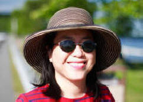

Introduction
| Fonction |
Professeure titulaire, Département d'Education, Université nationale Cheng-Chi, Taiwan |
 |
| Adresse actuelle |
Ministère de l'Éducation, Université nationale Cheng-chi, n ° 64, Sec.2, Chi Nan Road, Wen Shan District, Taipei, Taiwan 116 |
| Numéro de téléphone |
(886) 2-2939-3091 # 88007 |
| Fax： |
(886) 2-29396823 |
| E-mail： |
iaezcpc@nccu.edu.tw |
Licence en sciences
Ph. D. Education comparative et internationale (Université de Californie, Los Angeles, États-Unis, 1992)
Domaines de recherche
- Éducation comparée,
- L'enseignement supérieur chinois,
- Égalité des sexes dans l’ éducation,
- La réforme de l'éducation du point de vue mondial,
- Histoire de l'éducation
Sujets d’ enseignement
- “Cross-stratization”: Comment les échanges éducatifs peuvent faciliter la paix pour les pays en conflict
- La grande expérimentation de réforme de l'éducation à Taiwan: de la perspective mondiale et locale
- Néo-libéralisme et l'enseignement supérieur: l'expérience de la Chine et de Taiwan
- Le syndrome SSCI (Social Sciences Citation Index): L'impact du Classement des Universités de classe mondiale
- Le Syndrome emprunté de l’Education: Le jeu de PISA
- Internationalisation de l’ éducation en Asie de l'Est
Expérience professionnelle
- Professeure boursière de Fulbright à l'Université de Miami (2012 ~ 2013)
- Première Conférencière, Quatrième Conférence de l'étude d'évaluation de l'éducation civique du point de vue de l'approche de “Global Standard”, Faculté d'Education, Université d'Hiroshima, Japon (2012.9)
- Professeure honoraire, Université internationale d'Akita, au Japon (2012.7)
- Première Conférenciere, Conférence internationale sur le changement de la profession universitaire. Université Huazhong des Sciences et de la technologie, Chine. (2011.11)
- Première Conférencière, Conférence Internationale du Réseau Universitaire Mondiale (WUN). Hong Kong Institute of Education, Hong Kong (2011.10)
- Rédactrice, Livre blanc Rapport sur l'éducation à Taiwan, Ministère de l'Éducation (ROC) (2010.10 à 2011.3)
- Séjour professeure boursière de Fulbright, Fairbank Center for East Asia Studies, Université de Harvard (2006.8 ~ 2007.7)
- Professeure invitée et conférencière invitée, Ohio State University, (mai 2007)
- Coordinnatrice, Forum sur la réforme de l'éducation à Taïwan (ONG) (2006 à présent)
- Professeure invitée, Beijing Normal University (2006.5)
- Professeure honoraire invitée, École des sciences de l'éducation, Université de la Colombie-Britannique, Canada (2005)
- Professeure honoraire invitée, Centre d'études des Maoris, Université d'Auckland, Nouvelle-Zélande (2004)
- Professeure honoraire, Southern China Normal University, Guangzhou, Chine (2003- à présent)
- Professeure honoraire invitée, Ecole d'éducation de l'Université d'Auckland, Nouvelle-Zélande (1997-1998)
- Professeure invitée, Ecole d'éducation, Université de Toronto, Canada (1998)
Autres activités professionnelles
- Rédactrice en chef invitée, 2011- à présent), numéro spécial du périodique Chinese Education and Society (NY: M.E. Sharpe, Ins.)
- Membre du Conseil du périodique Chinese Education and Society (NY: ME Sharpe Ins., 2011- à présent)
- Secrétaire et Présidente, Forum de la réforme de l'éducation à Taiwan (2006- à présent)
- Présidente, Syndicat des enseignants de l'Université Nationale Cheng-Chi (2007- à présent)
- Membre du Conseil, Journal de la recherche en éducation (Taiwan) (2005- à présent)
- Membre du conseil, Journal d’ éducation comparée (Taiwan) (2010- à présent)
- Membre du Conseil, Journal de recherche en sciences de l'éducation (Taiwan) (2009- à présent)
- Membre du Conseil, Journal de l'enseignement primaire (Taiwan) (2009-2011)
- bénévole de la bibliothèque, Lycée universitaire affilié de Cheng-Chi (2009-2012)
- Bénévole et membre, Église chrétienne Chi-Chang (2004-a présent)
- Coordinatrice, Eglise Chi-Chang Foire annuelle de la charité (2007- 2011)
- Première Conférenciere, Asian Life Experience Assembly and Conference, Taipei (2009).